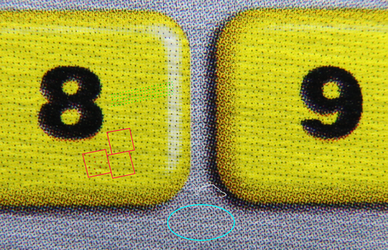
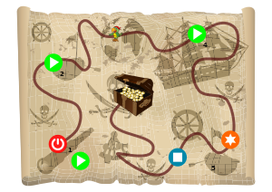

tttool
Dieser Artikel wurde für die folgenden Ubuntu-Versionen getestet:
Ubuntu 16.04 Xenial Xerus
Ubuntu 14.04 Trusty Tahr
Zum Verständnis dieses Artikels sind folgende Seiten hilfreich:
|  |
| Kodierung |
tttool  ist ein Werkzeug, um .gme-Dateien für tiptoi zu analysieren und zu erstellen. Vorhandene Dateien können überarbeitet und eigene Kreationen (für den Hausgebrauch) erschaffen werden. Der Phantasie sind keine Grenzen gesetzt.
ist ein Werkzeug, um .gme-Dateien für tiptoi zu analysieren und zu erstellen. Vorhandene Dateien können überarbeitet und eigene Kreationen (für den Hausgebrauch) erschaffen werden. Der Phantasie sind keine Grenzen gesetzt.
Installation¶
Um die Werkzeuge verwenden zu können, muss man im Vorfeld die folgenden Pakete installieren [1]:
git
haskell-platform
libncurses5-dev
 mit apturl
mit apturl
Paketliste zum Kopieren:
sudo apt-get install git haskell-platform libncurses5-dev
sudo aptitude install git haskell-platform libncurses5-dev
Die neueste Version des Quellcodes mittels Git herunterladen [2]:
git clone https://github.com/entropia/tip-toi-reveng.git tttool
Dabei wird der neue Ordner ~/tttool/ im Homeverzeichnis angelegt. In diesen wechseln und in den Ordner trunk navigieren. Hier die folgenden Befehle [2] ausführen:
cabal update cabal install --only-dependencies cabal install --bindir=.
In Schritt 2 werden eine Reihe Haskell-Libraries von hackage.haskell.org heruntergeladen, compiliert und (im Homeverzeichnis) installiert. Diese Libraries sind teilweise in der Distribution schon enthalten und könnten stattdessen über die Paketverwaltung installiert werden. Welche Libs benötigt werden + Spezifikation der nötigen Version steht im File tttool.cabal ganz unten unter "build-depends", die Paketnamen in Ubuntu fangen üblicherweise mit libghc- an.
Anschließend die gewünschte Audiodatei zur Bearbeitung herunterladen oder eine eigene Kreation erstellen.
Update¶
Sollte eine neue Version von tttool verfügbar sein, kann diese mit folgenden Befehlen im lokalenn tttool-Verzeichnis eingespielt werden:
git pull cabal install --bindir=.
Verwendung¶
Achtung!
Anwendung auf eigene Gefahr. Es wird keine Haftung für Schäden am Stift übernommen.
Der Aufruf der Werkzeuge erfolgt über das Terminal [2]:
tttool [OPTION] KOMMANDO
| Programmaufruf | |
| Befehl: | Beschreibung: |
| ./tttool -h, --help | Gibt die verfügbaren Kommandos von tttool aus. |
| ./tttool info DATEI.gme | Informationen zu DATEI.gme anzeigen. |
| ./tttool media DATEI.gme | Die Audiodateien von Datei.gme werden extrahiert. Diese sind fortlaufend nummeriert im Unterordner /media zu finden. |
| ./tttool explain DATEI.gme | Ausgabe der .gme-Datei als Hex-Code. |
| ./tttool export DATEI.gme | Die Steuerdatei wird in lesbarer Form im Ordner angelegt: DATEI.yaml |
| ./tttool assemble DATEI.yaml | Erstellung einer DATEI.gme aus einer YAML-Datei. |
| ./tttool play DATEI.gme | Ermöglicht das Testen einer DATEI.gme im Terminal durch Eingabe der OID-Code-Nummern. (Benötigt sox) |
sox
mit apturl
Paketliste zum Kopieren:
sudo apt-get install sox
sudo aptitude install sox
Überarbeitung¶
Um vorhandenen Dateien eine persönliche Note zu geben oder um Fehler zu entfernen, kann man die Struktur der Steuerungsdatei überarbeiten und mit Programmen, wie z.B. Audacity; neue Audiodateien erstellen und vorhandene Dateien ersetzen. Wichtig ist, dass diese als .ogg-Dateien vorliegen und 22050Hz sowie Mono erfüllen.
|  |
| Piraten-Geburtstag von M. Reischuck |
Eigenkreation¶
Um eigene Kreationen zu erstellen, benötigt man eine YAML-Datei, in welcher die auszuführenden Aktionen definiert werden. Eine Beispieldatei ist unter GitHub zu finden. Mit einem Editor [3] kann diese bearbeitet und erstellte Audiodateien integriert werden:
example.yaml¶
# This is an example source file for a TipToi file # The basic format is YAML # You can compile this running # ./tttool assemble example.yaml example.gme # The product ID must match that of the book you want to use this with product-id: 42 # The media path is optional # The default is "%s", i.e. to look in the current directory # If you use "example/Buch1_%s", here then P(test) will use # the file "example/Buch1_test.ogg". # Ogg files should be Mono, 22050 Hz. # tttool will append .wav or .ogg and uses whatever it finds media-path: example/%s # The comment does not really matter comment: An example GME file # Register initalisation. This is simply list of set-commands. # Every register not set is initialized to 0 init: $mode:=1 # The sounds to play on start-up welcome: bing, hello # This is the interesting part: Scripts. # Technically, this is an assoiative list with the OID as an index, # and a list of strings as the content scripts: # We begin to specify what to do when the area in the book with the OID code # 8066 is touched. 8066: # The following line means: If register $mode is set to 1, then set it to 2, and # increment register $1 by one, and play the sound example/hello.ogg. - $mode==1? $mode:=2 $1+=1 P(hello) # Here, the pen is going to play one of these three sounds randomly. - $mode==2? $mode+=1 P(one,two,three) - $mode==3? $mode:=1 P(back) # You can either refer to a concrete register ($1), or a named register. # tttool will map these to otherwise unused registers. 8067: - $1==0? - $1==1? P(one) - $1==2? P(two) - $1==3? P(three) # Besides == and !=, there are also the comparisons < and >= - $1!=1? $1 != 2? $1 != 3? $1:=0 P(back)
Text2Speach¶
Für schnelle Test kann tttool auch Ansagen aus Text erstellen. Dazu werden folgende Pakete benötigt:
libttspico-utils
vorbis-tools
mit apturl
Paketliste zum Kopieren:
sudo apt-get install libttspico-utils vorbis-tools
sudo aptitude install libttspico-utils vorbis-tools
In der YAML-Datei wird es folgendermaßen eingebunden:
product-id: 781
media-path: oggs/%s
comment: Text2Speach sample
welcome: start
# Spiellogik
scripts:
7001:
- P(sp_code7001)
7002:
- P(sp_code7002)
7003:
- P(sp_code7003)
speak:
- language: de
start: "Es kann los gehen."
sp_code7001: "Es wurde Code 7001 erkannt"
sp_code7002: "Es wurde Code 7002 erkannt"
sp_code7003: "Es wurde Code 7003 erkannt"Nach der Konfiguration kann die Datei TITEL.gme mit
./tttool assemble DATEI.yaml
erzeugt und anschließend auf den Stift kopiert werden. Genauere Informationen zur Verwendung sind der Projektseite zu entnehmen. Eine gelungene Eigenkreation ist auf GitHub zu finden: Piraten-Geburtstag  Einige weiter werden auf der Projektseite vorgestellt.
Einige weiter werden auf der Projektseite vorgestellt.
Hinweis:
Beim Ausdruck ist eine Auflösung von mindestens 1200 dpi nötig, idealerweise auf einem hochauflösenden Laserdrucker. Die Bilder sollten etwas blasser sein, damit der Kontrast besser ist. Es empfiehlt sich, das Bild im ersten Schritt mit einem Farb-Laserdrucker zu drucken und im Folgeschritt die Punkt-Matrix mit einem Schwarz-Weiß-Drucker drüberzulegen.
Teilweise ist aber auch ein Ausdruck mit 600 dpi erfolgreich. tttool bietet verschiedene Möglichkeiten beim erstellen der OID-Codes. Etwa das verdoppeln der Pixel pro Code-Punkt.
Funktienierende Druckerkonfigurationen listet das tttool-Wiki  auf.
auf.
- Erstellt mit Inyoka
-
 2004 – 2017 ubuntuusers.de • Einige Rechte vorbehalten
2004 – 2017 ubuntuusers.de • Einige Rechte vorbehalten
Lizenz • Kontakt • Datenschutz • Impressum • Serverstatus -
Serverhousing gespendet von